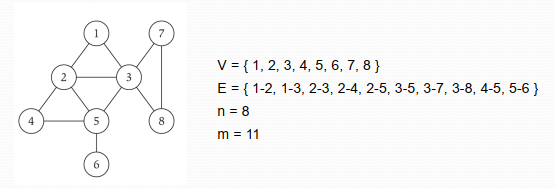
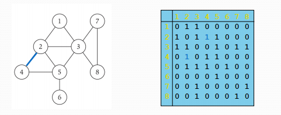
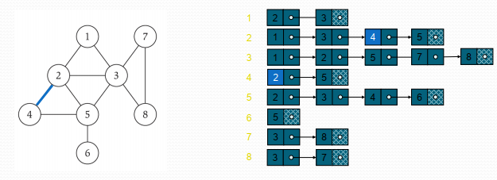
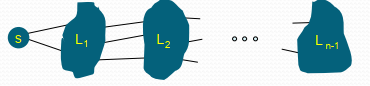
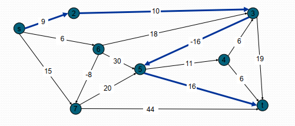
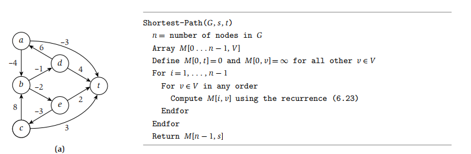
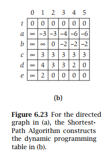
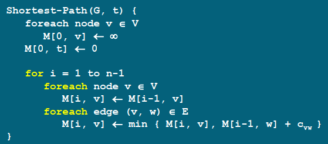

挂羊头卖狗肉大法好。 与其说是graph 章节不如说是，动态规划之graph分支。
Baisc Definition
Undirected Graphs
$$
G = (V,E)
$$
其中， V 是vertices， 也就是nodes
E 是edges， 是连线
默认的参数是： $n =| V |, m =| E |$
一张图搞定一切：

Adjacency Matrix
n-by-n matrix with $A_{u v}=1$ if $(u, v)$ is an edge

横着是U， 竖着是V，问题不大。
$\operatorname{takes} \Theta\left(n^{2}\right)$ space.
$\operatorname{takes} \Theta(n)$ time.
Adjacency List
感觉就是array+list，省空间好评。

前面黄色部分是表示当前的node，后面绿色的表示与当前node 连接的node
Take only O(m+n) space
$\quad$ The adjacency matrix representation of a graph requires $O\left(n^{2}\right)$ space, while the adjacency list representation requires only $O(m+n)$ space.
Cycles
转一圈又回来了的，如上图中的 V 1 -> 2 -> 4 -> 5 ->3 ->1
记住，首尾相等
Trees
如果不包含任何一个Cycle， 那么这就是一个Tree
Rooted Trees
choose a root node r and orient each edge away from r.
Graph Traversal
BFS uses a queue and DFS uses a stack, they different in the data structure.
Breadth First Search
BFS explore outward from s in all possible directions, adding nodes one “layer” ad a time.

选择一个node 作为顶点，那么其各层分别为 L1，L2， Ln-1
L1是跟L0 的 S 相临的点，而L2 是跟L1相邻，但是不包含在L0 里面的，依次类推，，，，
$L _{ i +1}=$ all nodes that do not belong to an earlier layer, and that have an edge to a node in $L$
BFS 可以用来找到最短距离(unweighted)。 将一个点设为顶点，数最小的层数就好了。
Depth First Search
深度优先，找准一个方向寻找，不撞南墙不回头。
可以看是否有cycle。
Directed Graphs
- directed acyclic graph is a directed graph with no directed cycles。
- Any vertex in a dag that has no incoming vertices is called a source
- any vertex with no outgoing edges is called a sink
Brinary Search Tree Optimal
这个问题其实也不复杂，实际上就是每个点都有权重，然后又访问概率，找到最优的source。
递归式：
$$\begin{aligned}
& \operatorname{optavg}(a, b | r)
=\left(\sum_{i=a}^{b} W[i]\right)+\operatorname{optavg}(a, r-1)+\operatorname{optavg}(r+1, b)
\end{aligned}$$
期中，左边的是T1，右边的是T2，就慢慢找总能找到的。
Shortest Paths in a Graph
Shortest path problem. Given a directed graph $G =( V, E)$, with edge weights $c_{ vw }$ find shortest path from node s to node t.
有意思的点在于： the cost from one point to another point can be negative.
In this problem, we have negative edge costs but no negative cycles.
动态规划的主要思想是：subproblem i could be to find a shortest path using only the first i nodes.
这里用到一个比较有趣的assumption：
If $G$ has no negative cycles, then there is a shortest path from s to $t$ that is simple (i.e., does not repeat nodes), and hence has at most $n-1$ edges.
这个递归公式可以写成：
If the path $P$ uses at most $i-1$ edges, then $OPT (i, v)= OPT (i-1, v)$
If the path $P$ uses $i$ edges, and the first edge is $(v, w),$ then $OPT(i,v)=c_{vw} + \operatorname{OPT}(i-1, w)$
If $i>0$ then
$$
OPT(i, v) = min(OPT(i − 1, v), min(OPT(i − 1, w) + c_{vw}))
$$
在公式中： i-1 表示有 这么多个edge，w 表示 v 的前一个点，$c_{vw}$表示 从w 到v 的cost。
于是 $OPT(i − 1, v)$ 就是，只用i -1 个edge 的cost， 而 $OPT(i − 1, w) + c_{vw}$ 表示，用了第i 个点，从i-1 到第i 个点的cost 是C。 OPT中的v 表示从v 到t， 而同样 w 表示从 w点到t.
所以实际上跟之前的动态规划还是一个意思。
 以表格为例： 最终目标是t, 而起点是 t,a,b,c …e.
表格的row 是出发点，而column 是允许经过的edge的数量，而 OPT 则应该越小越好。
以a 为例，当经过0 个edge时，不可能到达t, 而经过1 个时，直接从a->t.此时OPT(o) 是 无穷，因此 OPT(1)一定是最小的。
当经过两条edge时，就需要一个中间点 v ，此时搜索 只要用 $OPT(i-1,v) + C_{a->v}$ 然后问题就转化成了，从v->t 的OPT最小值问题。
 这是老师给的ppt上的算法，跟书上的其实是一个东西，不要被外表迷惑了。Distance Vector protocal
有空再回来